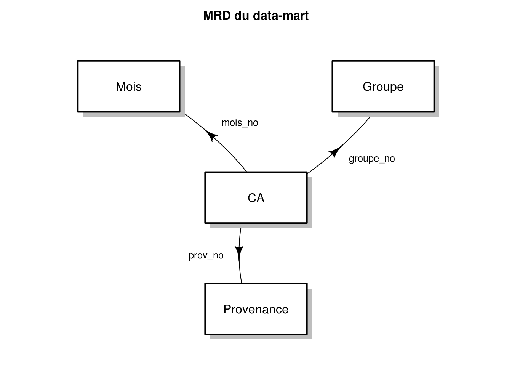

R - STID 2ème année4 points
Vous devez rédiger un compte-rendu de TP sous la forme d’un document R markdown. Les fichiers .Rmd et .html seront à déposer sur Moodle. Les fichiers .txt doivent être lues dans le même répertoire que le fichier .Rmd. La notation sur cette partie prendra en compte la présence ou non d’erreurs à la compilation, la clarté du document et la qualité du rendu.
4 points
Vous devez importer les quatre fichiers suivants :
Dans le fichier groupe.txt, il faut faire attention à la présence d’apostrophe ("'") dans certains mots. La fonction read.table() considère ce caractère comme un début (ou une fin) de chaîne de caractères. Il faut donc modifier l’option quote pour indiquer qu’il n’y a pas de caractères pour les chaînes de caractères dans ce fichier.
6 points (3 points par question)
Ces quatre tables constituent un data-mart simple d’un magasin fictif. ca est la table des faits, et les trois autres sont les tables de dimension. Dans chaque table, la clé primaire est dénommée no. Dans la table ca, les clés externes sont dénommées dim_no, dim étant remplacé par le nom de la dimension bien évidemment. Voici donc le modèle relationnel des données de ce data-mart.

Pour pouvoir faire des analyses, il faut donc réaliser une jointure entre ces quatre tables. Le résultat des jointures doit être stockée dans un data.frame nommée ca_tout.
Nous souhaitons pouvoir comparer les deux années, pour évaluer l’évolution du chiffre d’affaires. Pour cela, vous devez créer un data.frame, nommé ca_evol, qui contient donc, pour chaque mois, provenance et groupe, le CA en 2003 (ca2003), en 2004 (ca2004) et l’évolution entre les deux (evolution, égale à la différence entre ca2004 et ca2003).
6 points (1 point par question, sauf pour la dernière, 2 points)
La table ainsi créée contient donc toutes les informations concernant le chiffre d’affaires de l’entreprise, déclinée par chaque dimension. Nous pouvons donc obtenir les informations suivantes. Les résultats sont à présenter sous la forme de tableaux.
mois_numeromois, ca2003, ca2004, évolution